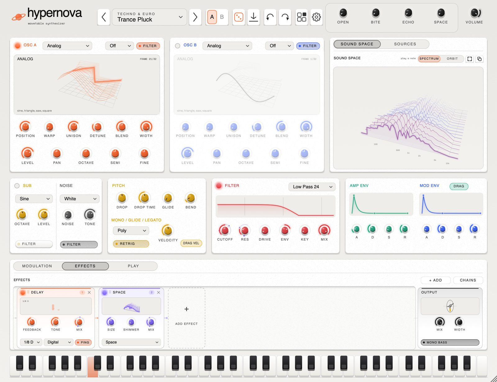
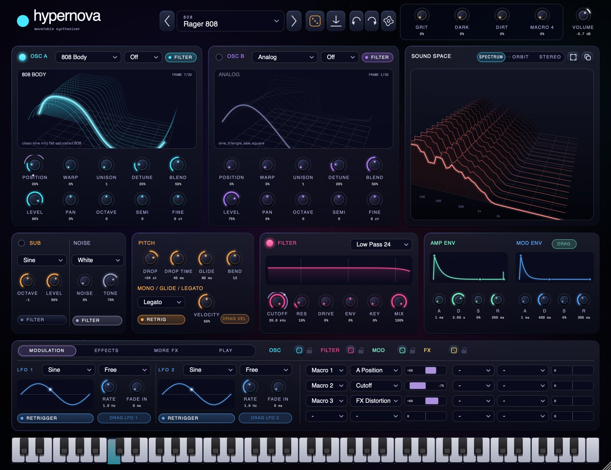
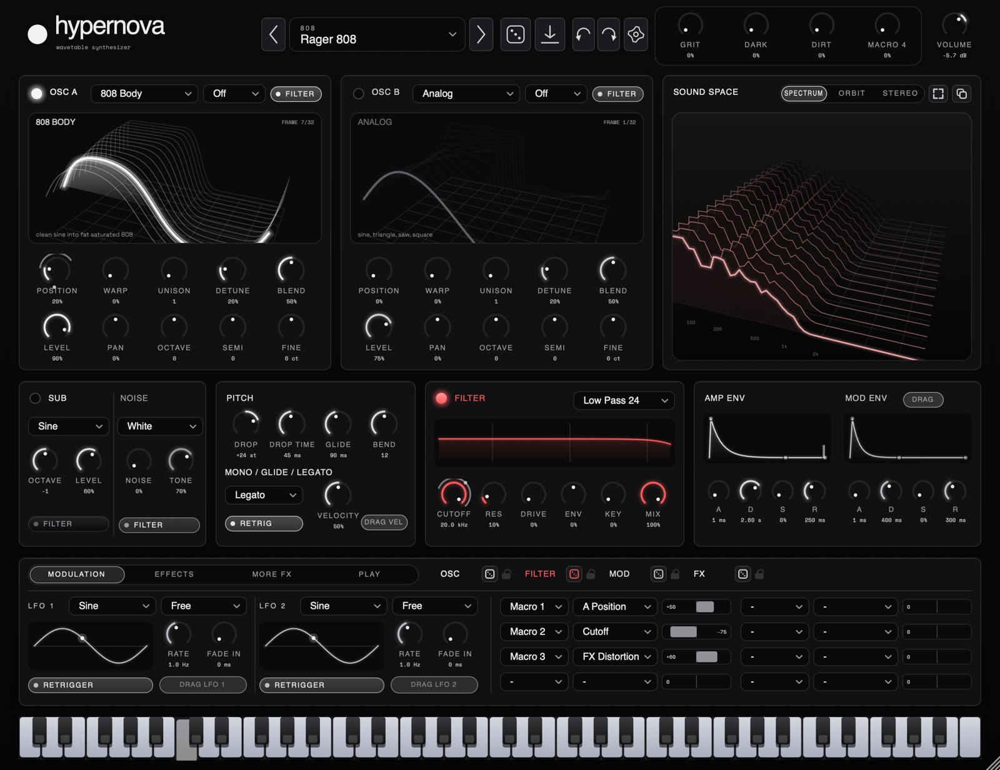
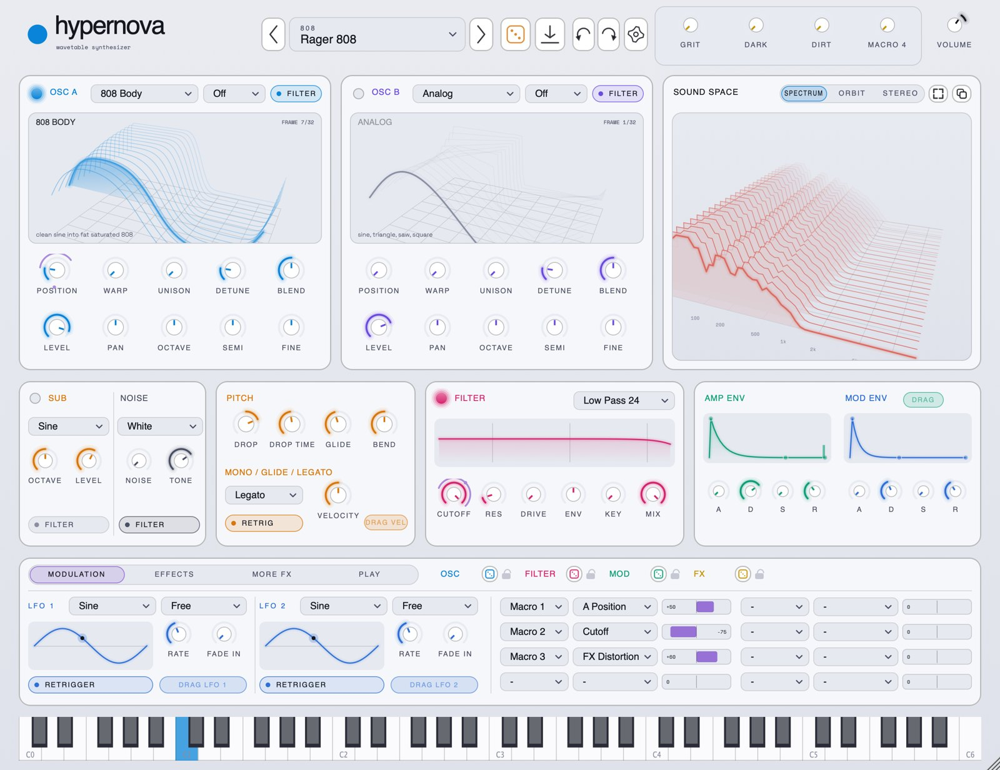
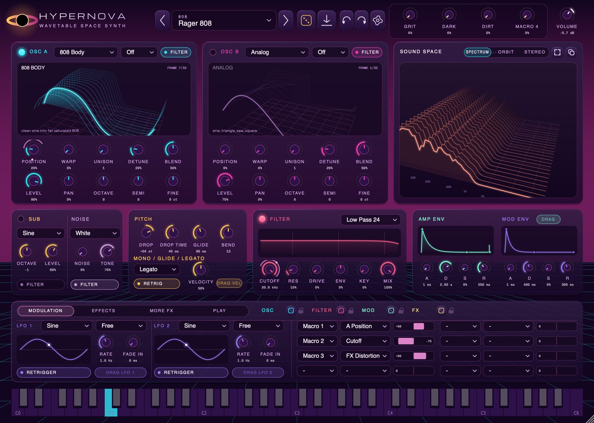

hypernova.
a wavetable synthesizer for macOS.
two oscillators, 362 sounds, fourteen effects.
VST3 / AU / STANDALONE · APPLE SILICON + INTEL · MACOS 10.13+ · FREE

it does bass properly.
808s that decay like 808s. amapiano log drums rebuilt from the FL Studio DX10 patch, parameter for parameter. subs, reeses and growls that keep their low end when you push them. then keys, plucks, pads, stabs and a forty-sound experimental bank for everything else.
drop a WAV on an oscillator and it becomes a wavetable. drag an LFO onto a knob and it moves. click an effect's name to switch it off. the rest is where you'd expect it.
specs.
sound
- 2 WAVETABLE OSCILLATORS, 7-VOICE UNISON
- 15 BUILT-IN TABLES × 32 FRAMES
- IMPORT YOUR OWN WAVETABLES FROM WAV
- WARPS: SYNC, BEND, MIRROR, PWM, CRUSH, FM
- CROSS MOD: FM BOTH WAYS, RING, AM, FILTER FM
- SUB OSCILLATOR, 8 NOISE TYPES
- 8 FILTERS INCL. COMB AND FORMANT
- UP TO 4× OVERSAMPLING, ONLY WHERE IT HELPS
movement
- 2 ENVELOPES WITH DRAG HANDLES
- 2 LFOS, TEMPO SYNC, FADE IN
- 8-SLOT MOD MATRIX, 4 MACROS
- DRAG A SOURCE ONTO ANY KNOB
- LIVE MODULATION RINGS
- ARPEGGIATOR, CHORD MEMORY, STRUM
- MONO, LEGATO AND GLIDE
- SECTION DICE WITH PADLOCKS
effects
- DISTORTION, 6 TYPES, 4× OVERSAMPLED
- OTT, CHORUS (3 MODES), FLANGER
- TAPE WEAR: WOW, FLUTTER, HISS, CRACKLE
- TRANCE GATE, AUTO PAN, SWEPT FILTER
- DELAY: DIGITAL, REVERSE, GRANULAR
- REVERB: SPACE, PLATE, SPRING, ROOM
- PITCH SHIFTER, EQ, WIDTH, MONO BASS
- CLICK A NAME TO BYPASS IT
everything else
- 362 FACTORY SOUNDS + 22 FOUNDERS PACK
- SHARE SOUNDS AS .HNPRESET FILES
- STEREO VIEW, POP-OUT VISUALISER
- 5 THEMES, CUSTOM ACCENT COLOUR
- UPDATES ITSELF, IF YOU LET IT
- SLEEPS WHEN SILENT: ~0 % CPU
- SIGNED AND NOTARIZED BY APPLE
- INSTALLER AND UNINSTALLER INCLUDED
five looks.
paper is the default. the rest are in the gear menu, or pick your own accent colour and ignore all five.




sound packs.
free. download a zip, drag it onto hypernova. the sounds turn up in the browser under the pack's name.
loading packs…
install.
- 01
open the disk image.
- 02
double-click install hypernova. on macOS 10.13 to 11, use install hypernova.pkg in everything else.
- 03
in Ableton: settings › plug-ins › rescan. it's under arrow › hypernova.
new versions install over old ones and keep your sounds. the uninstaller asks before it deletes anything.
changelog.
loading releases…